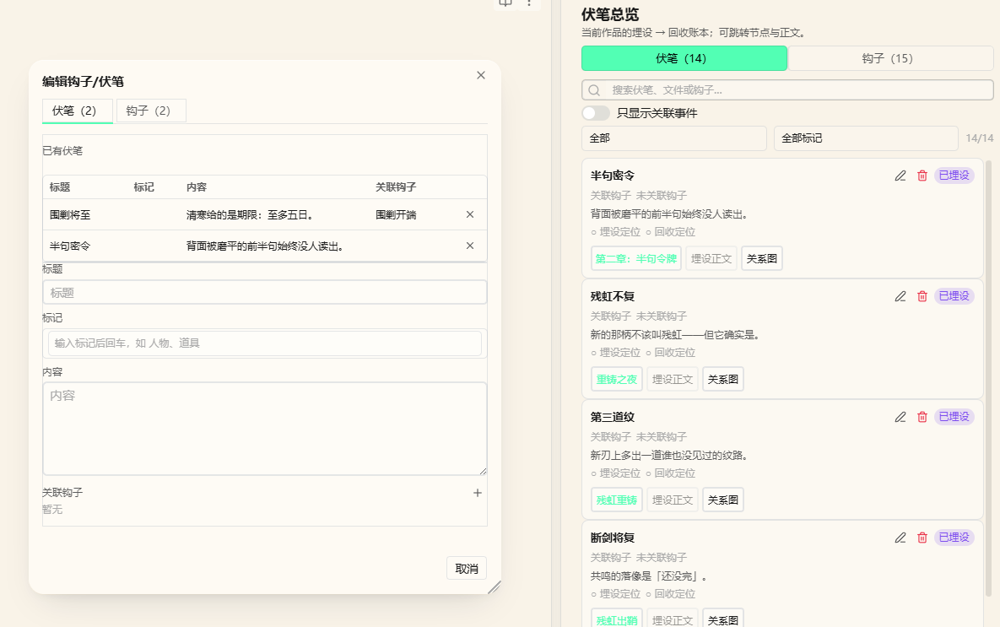

命运蓝图
功能简介
伏笔的主路径是 命运/ 里的蓝图节点，外加右侧「伏笔总览」。不再把槽位写进事件 frontmatter。
本页属于「伏笔与剧情」，按 功能简介 → 界面元素 → 操作方法与步骤 → 键盘操作 → 命令行 → 注意事项 组织，末尾的「其他」放补充说明与相关页面。
界面元素
界面元素一览
命运/文件夹- 蓝图节点
- 右侧伏笔总览的状态列

状态（不写盘，按蓝图推断）
| 状态 | 条件 |
|---|---|
| 空悬 | 无正文、无事件 |
| 已计划 | 有事件，无正文 |
| 已埋设 | 本节点有正文，同蓝图还没有其他节点有正文 |
| 执行中 | 本节点有正文，同蓝图另有节点也有正文，但尚未全部有 |
| 已回收 | 同蓝图所有节点都有正文 |
操作方法与步骤
怎么打开总览
Ribbon 分支图标，或命令打开伏笔总览。设置里关闭「伏笔面板」会连右键「添加伏笔」和高亮一起停用。
总览操作
- 过滤行左侧：标签筛选（来自节点上出现过的标签）。
- 排序：标题正/倒序、按关联正文的章节顺序、按关联事件时间。
- 「只显示关联事件」：按当前活动正文在
textBySource上的事件 uuid 过滤。 - 卡片上因果线、正文、事件用 Link 组件；右上角文档图标打开命运文件。
从编辑器添加
- 在已注册作品的正文或事件里框选。
- 右键「添加伏笔」→「添加到因果线」→ 选文件与节点；没有文件时可新建。
- 选区作为
ThreadNodeRef挂到节点的 prose（正文）或 events（事件）。
关系图 pack、裂变角标、卡片摘要、正文伏笔高亮都读这套关联。作品日志记录命运文件的增删与关联。
键盘操作
| 按键 | 作用 |
|---|---|
| Ctrl/Cmd+P | 打开 Obsidian 命令面板，按名称搜索并执行本页「命令行」里的命令（Obsidian 自带，不是插件默认快捷键） |
| Enter | 提交当前输入 / 确认（各类弹窗、内联输入、列表项） |
| Esc | 取消编辑 / 关闭弹窗或抽屉 |
所有视图级快捷键在输入框、正文编辑态内都不触发（isTypingTarget 判定）；隐藏或失焦的面板也不响应。下表的「命令行」是另一套入口，两者不要混为一谈。
命令行
本功能没有注册独立的命令面板命令，入口见上方「操作方法与步骤」与「界面元素」。全部命令清单见 命令与入口。
以上命令均没有默认快捷键：源码里的 addCommand 没有声明 hotkeys，需要快捷键请自行到「设置 → 快捷键」绑定。命令面板本身由 Obsidian 提供，不是插件命令。
注意事项
Warning
旧事件里的 伏笔/钩子 数组界面不再读、也不会自动迁移或删除。表格把这两列藏掉。
通用限制
- 本插件 manifest 声明
isDesktopOnly: true，最低 Obsidian 1.8.7；笔记始终是明文 Markdown，插件只读写 frontmatter 与System/*.json。 - 插件没有为任何命令注册默认快捷键，需要快捷键请到「设置 → 快捷键」按命令名搜索后自行绑定。
- 视图级快捷键只在画布 / 视图聚焦且可见时生效，输入框内不触发。